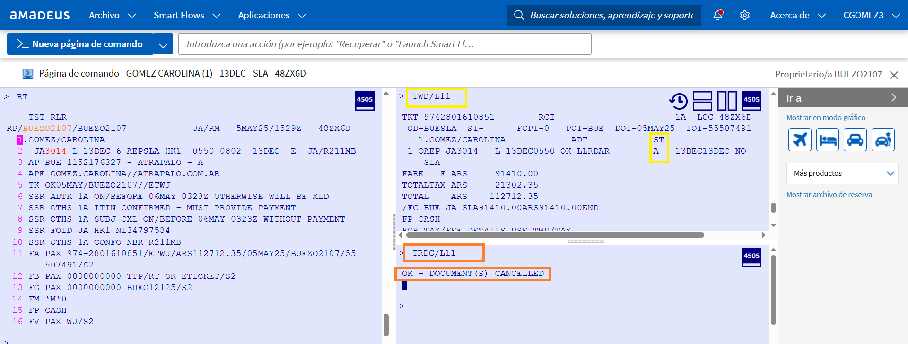

Manual Operativo Amadeus
Guía de comandos y procedimientos para Selling Platform Connect.
Logueo Inicial
Ingresamos al sistema desde su entorno web: Amadeus Selling Connect.
Al abrir el programa, nos pedirá el User, ID de Oficina (OID) y el Password.
El ID de Oficina define el pseudo/dominio donde vamos a gestionar las reservas.
Iatas LATAM
🇦🇷 Argentina
Iata Propio: 55547925
OID: BUEZO210D
Iata Ricale: 55507491
OID: BUEZO2107
🇵🇪 Perú
Iata Propio: 91503031
OID: LIMZO2107
🇨🇱 Chile
Iata Propio: 75502770
OID: SCLZO2107
¿Cómo crear una reserva de cero?
Paso 1 Nombres:
Usa NM1 seguido de Apellido/Nombre.
Ejemplo: NM1GOMEZ/CAROLINA
Paso 2 Disponibilidad:
Usa AN + Fecha + Ruta + Aerolínea.
Ejemplo: AN26SEPAEPBRC/AJA
Paso 3 Guardar lugares:
Comando SS (Vender).
Ejemplo: SS1L1
Paso 4 Datos de Oficina:
- • Teléfono empresa: AP
- • Plazo de emisión: TKTL
Paso 5 Contacto Pasajero (SSR):
- • Teléfono: SRCTCMYYHK1-541168554866
- • Email: SRCTCEYYHK1-gomez//atrapalo.com.ar/P1
- • DNI: SRFOIDYYHK1-NI34587951/P1
Paso 6 Cotización:
FXR (Cotizar)
FXP (Guardar Tfa)
FXB (Más barato)
Paso 7 Cierre:
RF + ER
Anulación (Void)
Solo se pueden voidear tickets con estatus OPEN.
Comando de Void: TRDC/L(nro_linea)

Verificación post-anulación: